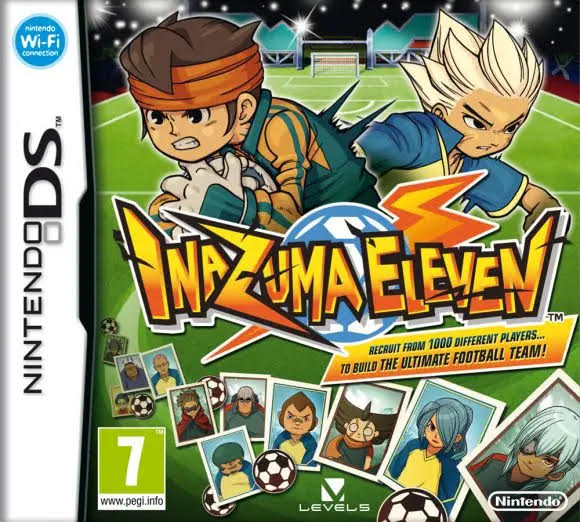
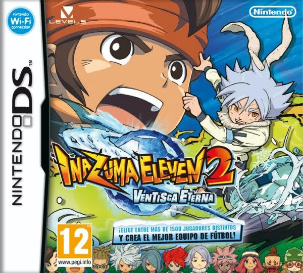
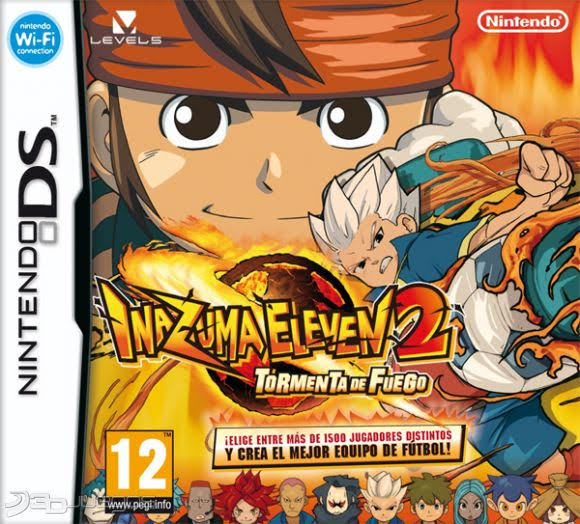
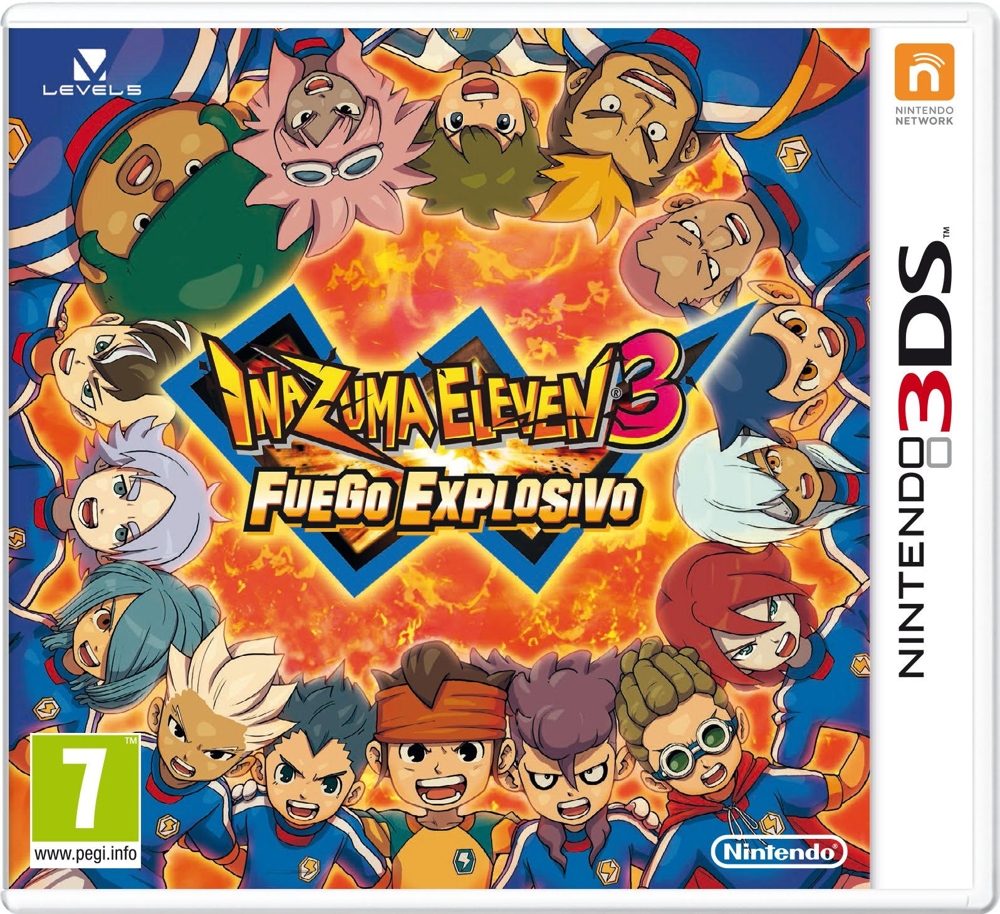
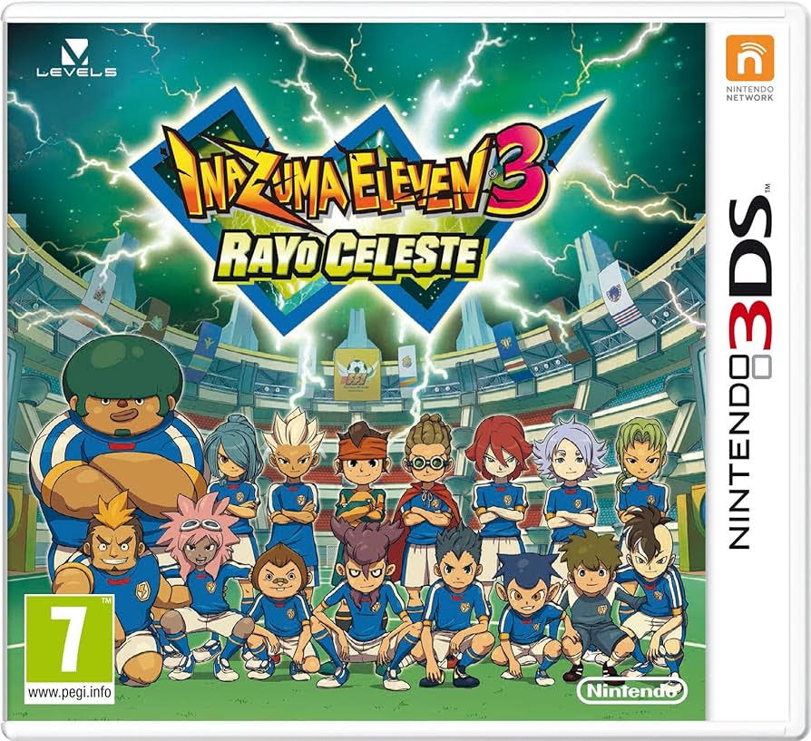
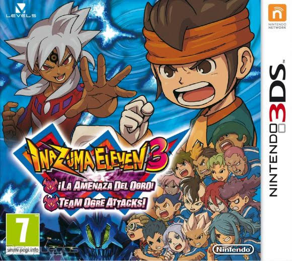

Inazuma Eleven (イナズマイレブン, Inazuma Eleven, lit. Los Once Relámpagos en japonés) es un videojuego de rol, RPG y fútbol creado y publicado por Level-5. Es el primer juego de la trilogía original y también es el primero de la cronología. La historia se centra en un chico llamado Mark Evans el capitán y portero del club de fútbol del Instituto Raimon. Es el nieto de uno de los mayores porteros de Japón y ex-entrenador de los legendarios Inazuma Eleven, David Evans que murió antes de él naciera. A pesar de su talento, su instituto carece de un auténtico equipo de fútbol y los mismos alumnos de su escuela no parecen muy interesados en el equipo. Pero cuando aparece un chico misterioso proveniente del Instituto Kirkwood, el equipo se pone en marcha, y el protagonista saldrá a buscar y reclutar miembros para el equipo para así participar en un torneo de fútbol llamado Fútbol Frontier en la que tiene que ganar para ser los mejores del país.

Inazuma Eleven 2 (イナズマイレブン2 : 脅威の侵略者, Inazuma Eleven 2: La amenaza de los invasores en japonés) es el segundo videojuego de la saga de Inazuma Eleven desarrollado por Level-5 para Nintendo DS. También es el segundo juego de la primera cronología. Salió a la venta el 1 de octubre del 2009 en japón y el 16 de marzo del 2012 en europa. A partir de este juego, cuenta con dos ediciones: Tormenta de Fuego (ファイア, Fire en japonés) y Ventisca Eterna (ブリザード, Blizzard en japonés). La fecha del juego en Europa fue revelada por la misma Revista Oficial Nintendo (antes Nintendo Acción), junto con un avance del videojuego. La fecha de salida es el 16 de marzo de 2012. Además, en caso de reservarse se recibirá un llavero de Mark (Ventisca Eterna) o Axel (Tormenta de Fuego). Una destacada novedad es que la calificación por edades del juego ha ascendido a +12, cuando en el primer juego y el tercero era +7 debido a la cantidad de violencia y momentos duros que experimentan los personajes.


Inazuma Eleven 3 (イナズマイレブン3: 世界への挑戦!!, Inazuma Eleven 3: Desafío al Mundial!! en japonés) es el tercer videojuego de la saga de Inazuma Eleven desarrollado por Level-5 para Nintendo DS en Japón y Nintendo 3DS en Europa. También es el tercer y último juego de la primera cronología. Al igual que la entrega anterior, esta cuenta con ediciones diferentes como Rayo Celeste (スパーク ,Spark en Japonés), Fuego Explosivo (ボンバー, Bomber en Japonés) y ¡La Amenaza del Ogro! (ジ・オーガ, The Ogre en Japonés). Después de que el Raimon derrotara a la Academia Alius, se anuncia un torneo llamado Fútbol Frontier Internacional en la que jugarán a nivel mundial contra varios equipos de otros países. La mayoría de los chicos del Raimon son seleccionados junto con varios estudiantes de otras escuelas (ya conocidas) mas dos nuevos amigos, un nuevo entrenador y una nueva gerente que representarán a Japón bajo el nombre de Inazuma Japón.


